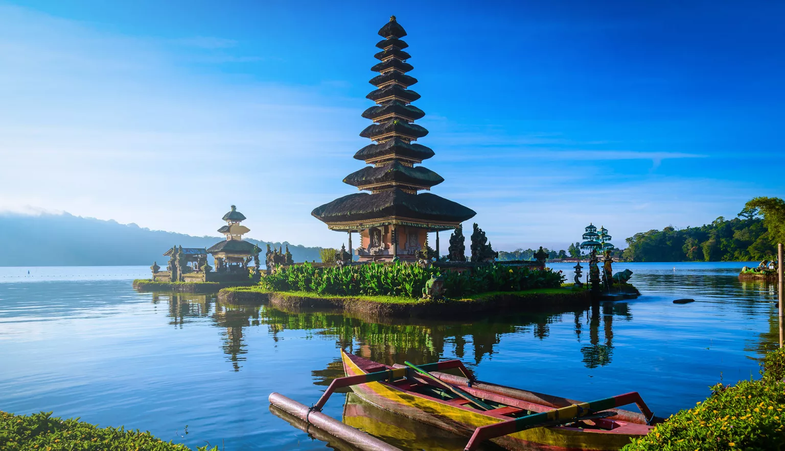
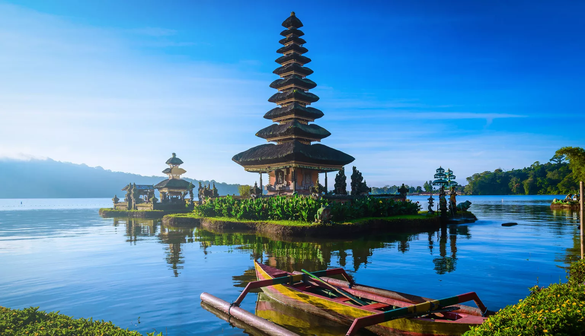

Miami şehri, Amerika Birleşik Devletleri'nin 42.büyük şehri olarak bilinir. Yapılan bir araştırmaya göre ise Miami şehri, ABD'nin en temiz şehirlerinden biridir. Hem temiz havası hem temiz sokakları hem de temiz suyuyla geri dönüşüm programlarıyla birlikte Amerika'nın en temiz şehirlerinden biri olarak seçilmiştir.
Benim içinse orayı özel kılan insanların özgürce eğlenebildiği ve mutlu yaşadıkları, sıkıldıklarında masmavi okyanus sularında yüzebildiği yer olması.

Birleşik Krallık'ın kuzey kesiminde yer alan İskoçya; manzaraları, zengin tarihi ve canlı kültürü ile öne çıkar. Sislerle kaplı Highlands'den Edinburgh ve Glasgow'un hareketli sokaklarına kadar gezginlere çok çeşitli deneyimler sunar. Glasgow, İskoçya’nın en büyük şehridir ve önemli bir ticaret ve kültür merkezidir. Ülke; ekose etekler, gaydalar ve Loch Ness Canavarı gibi ikonik sembollerin yanı sıra tarihi kaleleri, antik kalıntıları ve pitoresk gölleriyle ünlüdür. Ziyaretçiler; büyüleyici köyleri keşfedebilir, görkemli vadilerde yürüyüş yapabilir, haggis ve kurabiye gibi geleneksel İskoç mutfağına ait lezzetleri deneyebilir. İskoçya geziniz sırasında Edinburgh’da vakit geçirecekseniz gezilecek yerler arasında Edinburgh Kalesi ve Royal Mile başta gelir. Glasgow'da ise Kelvingrove Sanat Galerisi ve Müzesi gibi kültürel zenginliklere sahip yerleri görebilirsiniz. Highlands’de ise benzersiz manzaralar sunan Loch Ness, Eilean Donan Kalesi gibi yerleri keşfedebilirsiniz.
 

Bali Endonezya'nın en popüler turistik adalarından bir tanesidir. Başkenti Denpasar olan adanın çevresi mercan kayalıkları ile çevrilidir. Adını güney kumsalları beyaz kumlarla kaplı, Kuzey kumsalları ise siyah kıllarla kaplıdır. Bu da adanın oldukça popüler olmasını en büyük sebeplerinden bir tanedir